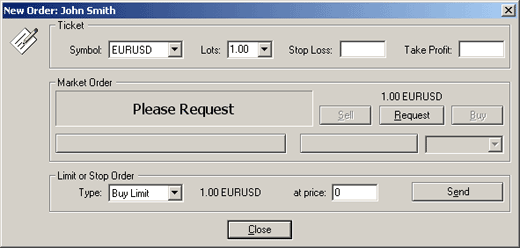
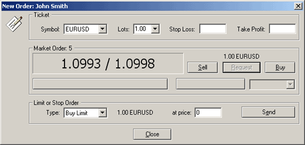
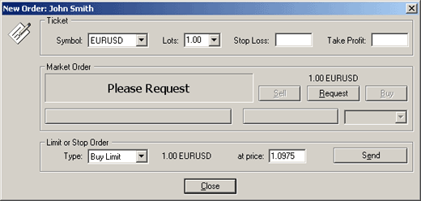
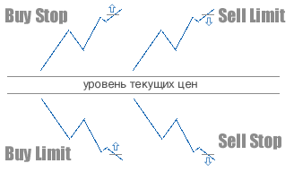
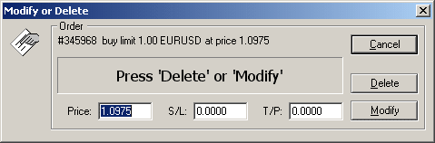

Открытие позиции и установка отложенных
ордеров
Открытие позиции или установка
отложенного ордера может быть произведено несколькими способами:
- меню Tools -> New Order или F9;
- двойным щелчком мыши на курсе валют в окне котировок;
- нажатием правой кнопки на окне торгового терминала; (вкладка Trade) и выбор в появившемся контекстном меню пункта
New Order.
Появляется диалог, с помощью
которого можно открыть позицию или установить отложенный ордер:

Вы можете выбрать инструмент (поле Symbol) или количество лотов (поле Lots). При нажатии на кнопку Request вы получите котировки для совершения сделки:

Кнопки Buy и Sell стали активными. По правой котировке можно
"купить" (Buy), а по левой котировке - "продать"
(Sell). Предложенные котировки будут активны
всего несколько секунд (счетчик оставшихся секунд расположен чуть выше
окошка с котировками). Если в течение этого промежутка времени не было
принято решение о сделки, то кнопки Buy и Sell снова станут неактивными. После совершения сделки
появится открытая позиция в окне торгового терминала. Если текущие рыночные цены вас
не удовлетворяют, вы можете установить отложенный
ордер. Отложенный ордер - это приказ при достижении рынком
определенной цены купить или продать по этой цене определенное количество
лотов. Для установки отложенного ордера вы должны заполнить поля Type (тип ордера), at price
(цена ордера), Symbol (инструмент) и Lots (количество лотов).

Правила установки отложенных ордеров:

Далее
нажмите кнопку Send. В случае успешной установки
отложенного ордера информация о нем появится в окне торгового терминала. В случае неправильных действий
по установке отложенного ордера появится сообщение Invalid Price. Это говорит о том, что вы или пытаетесь
выставить ордер слишком близко к текущей цене (ближе, чем величина спрэда
по данному инструменту), либо неверно выбрали тип ордера (Buy Limit, Buy Stop, Sell Limit, Sell Stop). В качестве
разделителя дробной части используйте ТОЧКУ, а не запятую. И в случае
открытия позиции, и в случае установки отложенного ордера вы можете сразу
же выставить Stop Loss и Take Profit ордера. Это вы можете осуществить
путем заполнения полей Stop Loss и/или Take Profit (перед нажатием кнопки Request или Send). Изменить уровень отложенного ордера вы можете
несколькими способами:
- нажатием правой кнопки мыши на окне торгового терминала (закладка
Trade) вызовите контекстное меню и выберите в
нем пункт Modify or Delete Order;
- дважды щелкните мышью на отложенном ордере в окне торгового
терминала.
Появится окно:

Установите в поле Price новый
уровень ордера и нажмите кнопку Modify.
Назад Содержание Далее